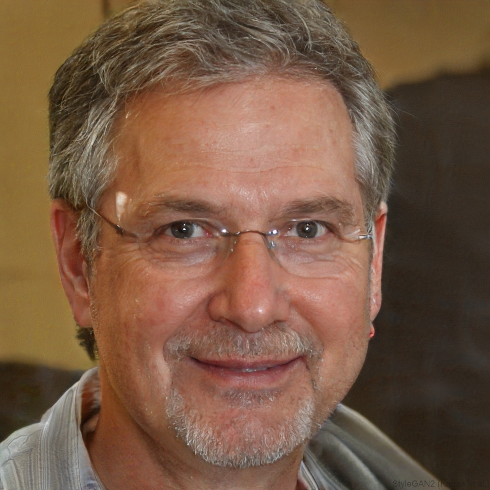

Marina Vidal
Taller La Ladera, Girona
Ceramista especializada en vajilla utilitaria y esmaltes de baja temperatura. En su taller combina producción pequeña y formación para alumnado joven.
Voces invitadas
Profesionales que trabajan con cerámica, textil, madera y formación comercial para que las jornadas conecten oficio y futuro.
Taller La Ladera, Girona
Ceramista especializada en vajilla utilitaria y esmaltes de baja temperatura. En su taller combina producción pequeña y formación para alumnado joven.

Forja de Valdemora, Segovia
Diseña herramientas y piezas decorativas en hierro reciclado. Su charla se centra en cómo vender piezas artesanas a través de medios digitales.
Cooperativa Hilo Sur, Bilbao
Trabaja con tintes vegetales y tejido manual. Presenta un taller breve sobre cestería y cómo documentar procesos para redes sociales.